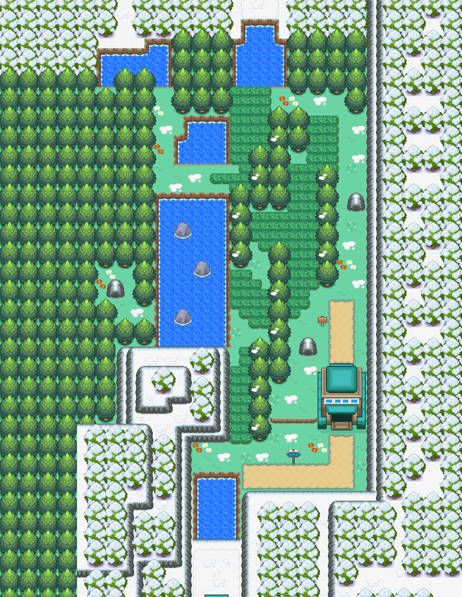

贪心栗鼠（全国图鉴 No.0819）

怎样获得
广播遭遇
- 46号道路 ｜ 周日（需播放「伽勒尔之声」） ｜ 槽权重 40 ｜ 地图：46号道路
- 29号道路 ｜ 周日（需播放「伽勒尔之声」） ｜ 槽权重 40、20 ｜ 地图：29号道路
- 30号道路 ｜ 周日（需播放「伽勒尔之声」） ｜ 槽权重 40 ｜ 地图：30号道路
- 31号道路 ｜ 周日（需播放「伽勒尔之声」） ｜ 槽权重 40 ｜ 地图：31号道路
- 32号道路 ｜ 周日（需播放「伽勒尔之声」） ｜ 槽权重 20 ｜ 地图：32号道路
- 33号道路 ｜ 周日（需播放「伽勒尔之声」） ｜ 槽权重 20 ｜ 地图：33号道路
- 桔梗市 ｜ 周日（需播放「伽勒尔之声」） ｜ 槽权重 20 ｜ 地图：桔梗市
- 50号水路 ｜ 周日（需播放「伽勒尔之声」） ｜ 槽权重 40 ｜ 地图：50号水路
- 50号水路 ｜ 周日（需播放「伽勒尔之声」） ｜ 槽权重 40 ｜ 地图：50号水路
- 43号道路 ｜ 周日（需播放「伽勒尔之声」） ｜ 槽权重 20、20 ｜ 地图：43号道路
- 周日及未匹配日期的默认兜底表 ｜ 槽权重 40、20 ｜ 未播放对应地区之声时的兜底出现
进化
本槽的进化去向
- → 藏饱栗鼠 ｜ 达到 Lv.24
数据来源
- 内部槽：1111
- 属性：一般 ｜ 种族值合计 275
- 种族值：HP 70 ｜ 攻击 55 ｜ 防御 55 ｜ 特攻 35 ｜ 特防 35 ｜ 速度 25
- 捕获率字段：255（表值；实际捕获还受精灵球/状态/等级影响）
- 蛋群：陆上 / 陆上 ｜ 成长曲线：MEDIUM_FAST
- 基础数据：
wiki_export/core/data/species.json - 全国图鉴映射：
wiki_export/core/data/national_dex.json - 进化数据：
wiki_export/core/data/evolutions.json - 获取数据：
wiki_export/world/data/acquisition_by_species.json（species_id 1111） - 遭遇表：
wiki_export/world/data/encounters.json - 地图：
wiki_export/world/data/maps.json - 进化方式符号：
wiki_export/enrichment/reference_only/evolution_methods.json（参考表） - 道具/招式名称：
wiki_export/core/data/items.json、wiki_export/core/data/moves.json - 证据状态：仅有内部选槽权重；广播门控旗标语义未穷举
- 证据状态：兜底选择与广播门控条件未穷举
地点地图
共享RGB底图；点击可缩放定位。数字对应本页相关地点，不代表地图上全部事件。
46号道路


地图范围记录：当前资料没有精确人物／遭遇坐标。
29号道路


地图范围记录：当前资料没有精确人物／遭遇坐标。
30号道路


地图范围记录：当前资料没有精确人物／遭遇坐标。
31号道路


地图范围记录：当前资料没有精确人物／遭遇坐标。
32号道路

地图范围记录：当前资料没有精确人物／遭遇坐标。
33号道路


地图范围记录：当前资料没有精确人物／遭遇坐标。
展开其余 4 张地点地图
桔梗市

地图范围记录：当前资料没有精确人物／遭遇坐标。
50号水路

地图范围记录：当前资料没有精确人物／遭遇坐标。
50号水路

地图范围记录：当前资料没有精确人物／遭遇坐标。
43号道路

地图范围记录：当前资料没有精确人物／遭遇坐标。